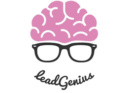
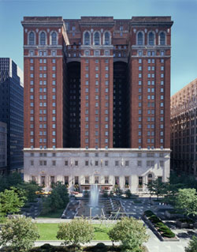
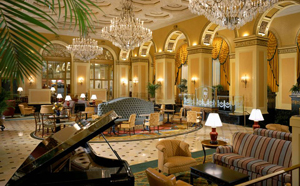

HCOMP 2014
Conference on Human Computation & Crowdsourcing
November 2-4, 2014 ‐ Pittsburgh, USA
Program | Registration | Travel and Hotel | Committee | Workshops | Works-in-Progress & Demo | Doctoral Consortium | Sponsorship | Past Meetings | Crowd Camp
 Courtesy of Derek J. Cashman
Courtesy of Derek J. Cashman
Call for Participation
The Second AAAI Conference on Human Computation and Crowdsourcing (HCOMP-2014) will be held November 2-4 in Pittsburgh, USA.
The HCOMP conference is cross-disciplinary, and we invite submissions across the broad spectrum of crowdsourcing and human computation work. Human computation and crowdsourcing is unique in its direct engagement and reliance on both human-centered studies and traditional computer science. The HCOMP conference is thus aimed at promoting the scientific exchange of advances in human computation and crowdsourcing among researchers, engineers, and practitioners across a spectrum of disciplines who may otherwise not have the opportunity to hear from one another. The conference was created by researchers from diverse fields to serve as a key focal point and scholarly venue for the review and presentation of the highest quality work on principles, studies, and applications of human computation and crowdsourcing. The meeting seeks and embraces work on human computation and crowdsourcing in multiple fields, including human-centered fields like human-computer interaction, cognitive psychology, economics, management science, and social computing, and technical fields like databases, systems, information retrieval, optimization, vision, speech, robotics, machine learning, and planning.
Submissions are invited on principles, studies, and applications of systems that rely on programmatic access to human intellect to perform some aspect of computation, or where human perception, knowledge, reasoning, or physical activity and coordination contributes to the operation of larger computational systems, applications, and services.
The conference will include presentations of new research, works-in-progress and demo sessions, and invited talks. A day of workshops and tutorials will precede the main conference. The Doctoral Consortium will give doctoral students a unique opportunity to meet each other and experienced researchers in the broad interdisciplinary field of human computation and crowdsourcing. Submissions to the main conference will be due on April 10, 2014. Workshop and tutorial proposals will be due on April 22, 2014. Authors will be notified about the acceptance and rejection of their submissions on June 16, 2014. Accepted papers will be due in camera-ready form on July 16, 2014. A complete set of deadlines and notification dates for workshops, tutorials, works-in-progress and demonstrations can be found on the right.
HCOMP 2014 builds on a series of four successful earlier workshops (2009, 2010, 2011, and 2012) and the first AAAI HCOMP conference held in 2013. All full papers accepted will be published as AAAI archival proceedings in the AAAI digital library. While we encourage visionary and forward-looking papers, the paper track will not accept work recently published or soon to be published in another conference or journal. However, to encourage exchange of ideas, such work can be submitted to the non-archival work-in-progress and demo track, due on July 25, 2014. For submissions of this kind, the authors should include the venue of previous or concurrent publication.
The preface to the HCOMP-13 proceedings provides an overview of the history, goals, and peer review procedures of the conference. Additional background on the founding of the conference are discussed in this Computing Research News story.
Where
Omni William Penn Hotel
Pittsburgh, USA
When
Main Conference: November 3-4, 2014
Workshops: November 2, 2014
Crowd Camp: October 31 - November 1, 2014
Registration
Keynote Speakers
Contact
Follow
Conference Chairs | |
| Jeffrey P. Bigham (Carnegie Mellon University) David Parkes (Harvard University) |
|
| Contact the Chairs | |
Works in Progress and Demonstration Chair | |
| Haoqi Zhang (Northwestern) | |
Doctoral Consortium Chairs | |
| Matt Lease (University of Texas - Austin) | |
| Loren Terveen (University of Minnesota) | |
Workshops and Tutorials Chair | |
| Elizabeth Gerber (Northwestern) | |
Program Committee
Maneesh Agrawala (University of California, Berkeley) |
Workshops
Crowdsourcing, Online Education, and Massive Open Online Courses
Markus Krause (Leibniz University), Praveen Paritosh (Google), Joseph Jay Williams (Stanford University)
Citizen + X: Workshop on Volunteer-based Crowdsourcing in Science, Public Health and Government
organizers: Edith Law (Harvard University) and Cliff Lampe (University of Michigan)Works-in-Progress & Demonstrations
See the list of accepted work in progress posters and demos!
Works-in-progress and demonstrations submissions to HCOMP are due on July 25, 2014 at 5pm Pacific time. Submissions are limited to two pages in AAAI format, plus auxiliary information. See formatting information.
Works-in-progress
We encourage practitioners and researchers to submit Works-in-Progress as it provides a unique opportunity for sharing valuable ideas, eliciting useful feedback on early-stage work, and fostering discussions and collaborations among colleagues. Accepted submissions will be presented as a poster at the conference and made available to the community as a two-page poster abstract.
A Work-in-Progress is a concise report of recent findings or other types of innovative or thought-provoking work relevant to the HCOMP community. The difference between Works-in-Progress and other contribution types is that Work-in-Progress submissions represents work that has not reached a level of completion that would warrant the full Refereed selection process. That said, appropriate submissions should make some contribution to the body of HCOMP knowledge, whether realized or promised. A significant benefit of a Work-in-Progress derives from the discussion between the author and conference attendees that will be fostered by the face-to-face presentation of the work.
Demo
A demo is a high-visibility, high-impact forum of the HCOMP program that allows you to present your hands-on demonstration, share novel interactive technologies, and stage interactive experiences. We encourage submissions from any area of human computation and crowdsourcing. Demo promotes and provokes discussion of the role of technology, and invites contributions from industry, research, the arts and design.
The demo track showcases this year's most exciting crowd and human computation prototypes and systems. If you have an interesting prototype, system, exhibit or installation, we want to know about it. Sharing hands-on experiences of your work is often the best way to communicate what you have created.
We look forward to seeing your submissions, and to see you at HCOMP in November!
Crowd Camp
CrowdCamp is a two-day hack-a-thon for crowdsourcing, human computation, social media, collective intelligence ideas. The focus is on creating a deliverable prototype, result, or insight within the workshop itself. Prior CrowdCamp projects over the last four years have resulted in top-tier conference publications, blog posts, and on-going research.
This year's Crowd Camp will be held before the main conference/workshops on 10/31-11/1, and will be located in the "HCI Loft" at 407 S. Craig St. on Carnegie Mellon University's Campus.
HCOMP 2014 Sponsors | |
 |
 |
Hotel Information
AAAI has reserved a block of rooms at the Omni William Penn Hotel at reduced conference rates.
Please see the Hotel and Travel page for more information.


Past Meetings
- HCOMP 2013, Palm Springs, CA (first year as a conference)
- HCOMP 2012, Toronto Canada (co-located with AAAI)
- HCOMP 2011, San Francisco, CA (co-located with AAAI)
- HCOMP 2010, Washington, DC (co-located with KDD 2010)
- HCOMP 2009, Paris, France (co-located with KDD 2009)